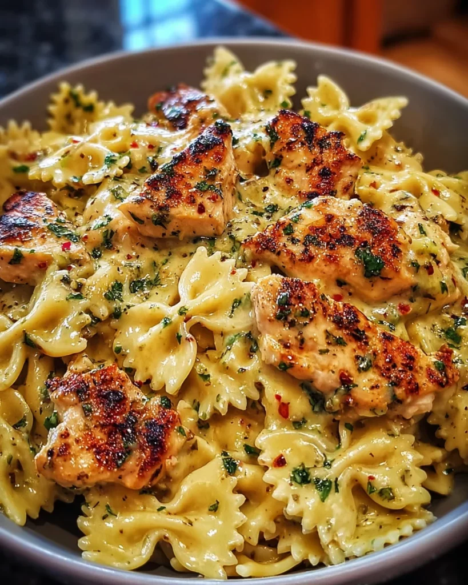

Garlic Butter Chicken-pasta is a creamy, comforting, and oh-so-delicious, perfect for family dinners or cozy nights in. Trust me, once you try it, you’ll be dreaming of it long after dinner is over. Let’s dive into this delightful dish that brings both ease and joy to your busy table!
This dish is a dream come true for busy moms and professionals like us! Not only is it quick to prepare—ready in just 30 minutes—but it also delivers mouthwatering flavors that everyone will adore. The creamy sauce coats the pasta perfectly, while the garlic and mozzarella create an irresistible aroma. Plus, you can easily customize it with veggies or spices. Dinner has never been so straightforward and satisfying!
First things first, fill a large pot with water and bring it to a boil. Add a generous amount of salt—it should taste like the sea! Toss in your bowtie pasta and cook it until it’s al dente, about 8-10 minutes. You want it to have a bit of bite. Remember to stir occasionally to prevent sticking. Once done, drain the pasta and set it aside, but don’t rinse it! We want that starch to help the sauce cling to every bowtie!
Next, heat up 2 tablespoons of olive oil in a spacious skillet over medium heat. Carefully add the bite-sized chicken pieces, seasoned with Italian seasoning, salt, and black pepper. Sauté for about 5-7 minutes, until the chicken is browned and cooked through. When it’s beautifully golden, remove it from the skillet and set it aside—it’ll be ready to join the pasta party soon!
In the same skillet, melt 2 tablespoons of butter over medium heat. This is where the magic begins! Add the minced garlic and sauté for 1 minute. The scent will fill your kitchen—trust me, it’s heavenly! Pour in 1/2 cup of chicken broth and 1 1/2 cups of heavy cream, letting the mixture simmer for 3-4 minutes. Watch as it thickens and coats the back of a spoon, creating the perfect base for our cheesy sauce!
Now, it’s time to bring everything together. Stir in 1 cup of grated Parmesan cheese until it melts and gives the sauce that rich, cheesy texture. Return the cooked chicken to the pan, and toss it all together until it’s evenly coated. Then, add the cooked bowtie pasta, mixing gently to ensure every piece gets embraced by that delicious sauce.
For the grand finale, sprinkle 1 1/2 cups of shredded mozzarella cheese on top of the pasta and sauce mixture. Cover the skillet with a lid and let it sit for about 2-3 minutes on low heat. This step will melt the mozzarella into gooey perfection. When you remove the lid, the sight of that melty cheese is a true delight!And there you have it—your Mozzarella Garlic Butter Chicken Bowties in Cheesy Cream is ready to shine at dinner time! Don’t forget to garnish with chopped parsley for that extra pop of color before serving hot. Enjoy the smiles and satisfied bellies that follow!